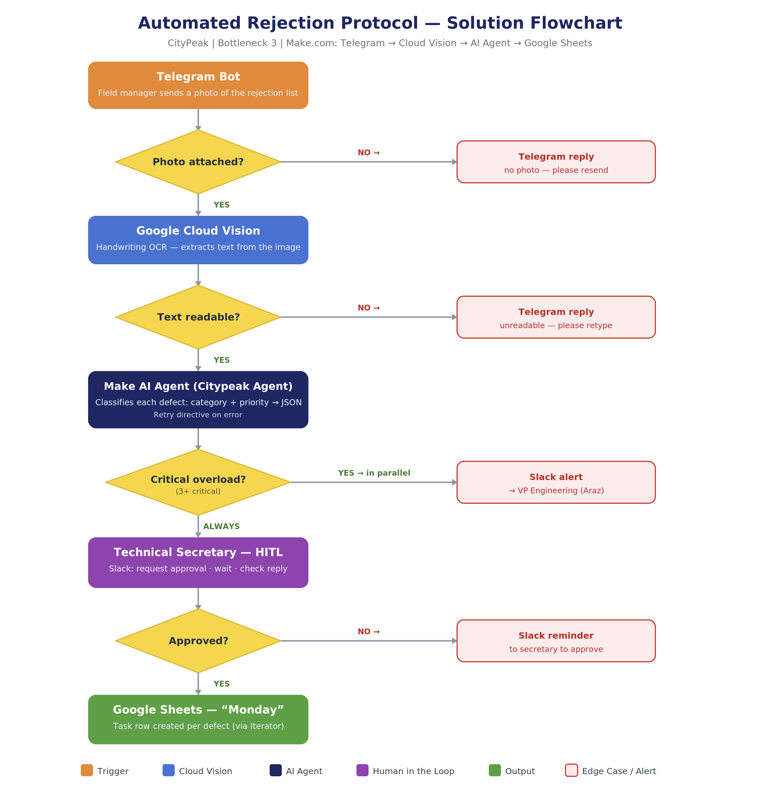
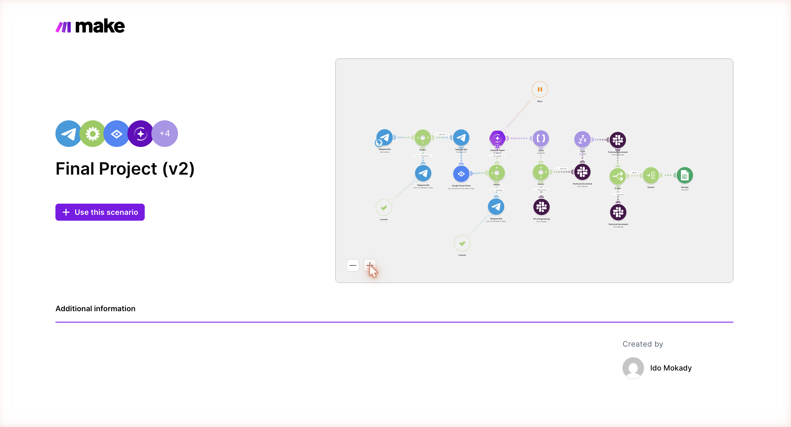

אוטומציה מקצה-לקצה של פרוטוקול הריג'קטים בהתחדשות עירונית — מצילום בשטח ועד משימה מאושרת במערכת הניהול, בלי הקלדה ידנית.
נבנה ואופיין ע"י עידו מוקדי · יועץ הטמעת AI חיצוני
מנהלי שטח בפסגת העיר רושמים ליקויים (ריג'קטים) על טופס נייר, מצלמים ושולחים למשרד. שם מזכירה טכנית מקלידה כל ליקוי ידנית ל-Monday. התהליך איטי, נוטה לטעויות, ותלוי בזמינות אנושית — וכל עיכוב בתיקון ליקוי גורר קנס איחור מסירה.
מיפוי הארגון חשף שלושה תהליכים חוסמים. הבחירה נפלה על פרוטוקול הריג'קטים בזכות ה-ROI הברור ביותר והצורך המובהק ב-AI: שילוב של קריאת כתב יד, הבנת תמונה וחילוץ מבנה נתונים.
800 פניות בחודש בטקסט חופשי הדורשות סיווג ידני וחיפוש באקסל. צורך: סיווג טקסט וחילוץ ישויות.
השוואה ידנית של PDF ספק מול Salesforce. צורך: חילוץ מ-PDF וחישוב תמחור מורכב.
OCR של כתב יד + הבנת תמונה + חילוץ משימות מובנה. ה-ROI הגבוה ביותר וה-use-case המובהק ל-AI.
תהליך Make.com מקצה-לקצה: מנהל השטח שולח צילום של טופס הריג'קטים לבוט טלגרם, וה-AI קורא, מסווג ומייצר משימות — עם עצירה לאישור אנושי לפני שהמידע נכנס למערכת.
last(map(...)) תמיד תופס את הרזולוציה הגבוהה ביותר; ומסלול נפרד ל"עומס יתר קריטי" מתריע לסמנכ"ל ההנדסה במקביל להמשך התהליך הרגיל.
תרשים הזרימה המלא של תרחיש ה-Make.com · לחצו להגדלה
צילום המסך של התרחיש הפעיל ב-Make.com · לחצו להגדלה| מדד | קטגוריה | לפני | אחרי |
|---|---|---|---|
| זמן מהשטח למשימה | יעילות | 30 דק' + שעות המתנה | ~2 דקות |
| דיוק חילוץ ריג'קטים | איכות | שיעור שגיאה לא ידוע | 95%+ |
| קנסות איחור מסירה | ROI | 400,000 ₪/שנה | 13,500 ₪/שנה |
כל הרכיבים נבחרו בשיקול של עלות אפס בזמן ההרצה, אמינות בהעברת קבצים בינאריים, ושילוב נייטיב בתוך Make.com.
המזכירה הטכנית מאשרת את המשימות שנוצרו לפני שהן נכתבות ל-Monday — שילוב של מהירות אוטומטית עם בקרת איכות אנושית.
צילום לא קריא → בקשה חוזרת להקלדה. אין תגובה תוך 30 דק' → התראה לסמנכ"ל. הודעה בלי צילום → תשובה אוטומטית בבוט.
תהליך מלא ופעיל מקצה-לקצה, כולל Routers, error handler ומיפוי דינמי.
צפייה בתרחיש החי ↗מסמך PDF מלא — מיפוי, צווארי בקבוק, אפיון פתרון, KPIs ותוכנית הטמעה.
הורדת ה-PDF ↓מצגת בת 12 שקפים לכיתה: פיץ' → הדגמה חיה → שאלות ותשובות.
עמוד אחד למנהל השטח — איך לשלוח ריג'קט לבוט ומה לצפות בתגובה.
הורדת ה-PDF ↓שלושה מדדים עם חישובים, יעדים וויזואליזציה לניטור שוטף.
ניהול שינוי — הדרגתיות, הדרכת עובדים והתמודדות עם התנגדויות.
הרקע שהוביל לפתרון הזה, ואיך אפשר להמשיך את השיחה.
אני עידו מוקדי, מעצב UX עם רקע בפסיכולוגיה, בדרך לתואר שני בנוירומדעים באוניברסיטת תל אביב. אני אוהב לרדת לשורש של תהליך אנושי — מה מעכב אותו, איפה נוצר עומס קוגניטיבי, ואיפה אנשים מוותרים על דיוק בגלל עייפות או שגרה — ואז לתרגם את זה למוצר או לתהליך שבאמת פותר את זה.
הפרויקט הזה הוא בדיוק הצומת הזה: הבנה של איך מנהל שטח עובד בפועל (טופס נייר, צילום, המתנה למזכירה) תורגמה לתהליך AI מקצה-לקצה ב-Make.com — עם בקרת איכות אנושית במקום שבו היא באמת נדרשת, לא בכל שלב. אני מחפש להמשיך לשלב בין מחקר משתמשים, עיצוב מוצר ואוטומציית AI — כעצמאי או בתפקיד קבוע.